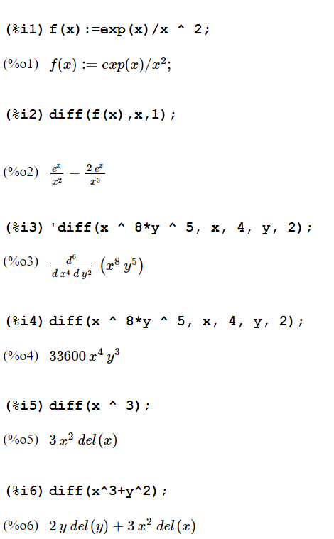
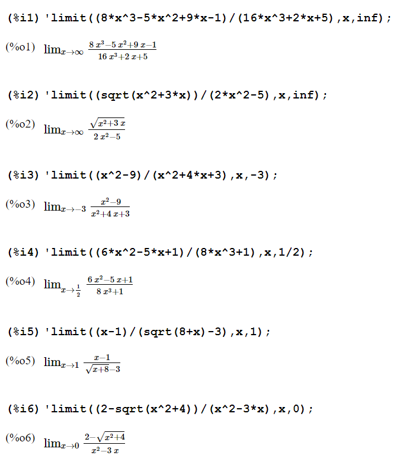

Лабораторна робота 1 студентки 1 курсу групи "Математика" Кубищенко Катерини Яковлівни
1. Номер і тема лабораторної роботизвіт до лабораторної роботи №1-1. Тема - Математичний пaкет Maxima. Інтегрування та диференціювання
2. Приклади з підручника: Глава 9.1пункт 3. 
Глава 9.2пункт 4. .png)
пункт 5.
3. Розв'язати приклад (розділ 3, номер (5) у групі +2)пункт 6. .png)
пункт 7.
4. Розв'язати приклад (розділ 4, номер (5) у групі +1)пункт 8. .png)
пункт 9. .png)
пункт 10. .png)
пункт 11. .png)
звіт до лабораторної роботи №1-2. Тема - Знаходження лімітів і розкладання в ряд Тейлора.
2. Приклади з підручника: Глава 9.3пункт 3.
Глава 9.4пункт 4.
3. Розв'язати 2 приклади на знаходження лімітів (границі) (сторінка 52, 53, приклади 1-6 по 2 задачі для номерів в групі 1-6) (номер у групі 5) (пункт 5 - умова приклада)пункт 5.
пункт 6. 
пункт 7.
пункт 8.
4. Розв'язати 2 приклади на розкладання в ряд Тейлора (номер в групі парний - 2 парних приклада, номер в групі непарний - 2 непарних приклада) (номер у групі 5) (пункт 9 - умова завдання)пункт 9. .png)
пункт 10.
звіт до лабораторної роботи №1-3. Тема - Знаходження визначника матриці, множення, додавання і транспонування матриць.
2. Приклади з підручника: Глава 10.1пункт 3.
Глава 10.2пункт 4.
3. Розв'язати 2 приклади визначника матриці ,множення, додавання і транспонування матриць в середовищі Maxima (сторінка 1. В першому завданні визначити 3 матриці відповідно до вашого порядкового номеру) (номер у групі 5) (пункт 5 - умова завдання)пункт 5. .png)
пункт 6.
пункт 7.
4. Виконати всі дії з вашими матрицями за завданням номер 2 (матриці з пункту 6) (пункт 8 - умова завдання)пункт 8. .png)
пункт 9.
пункт 10. .png)
звіт до лабораторної роботи №1-4. Тема - Побудова графіків функції.
2. Приклади з підручника: Степенна функція Тригонометрична функція.png)
.png)
.png)
.png)
.png)
.png)